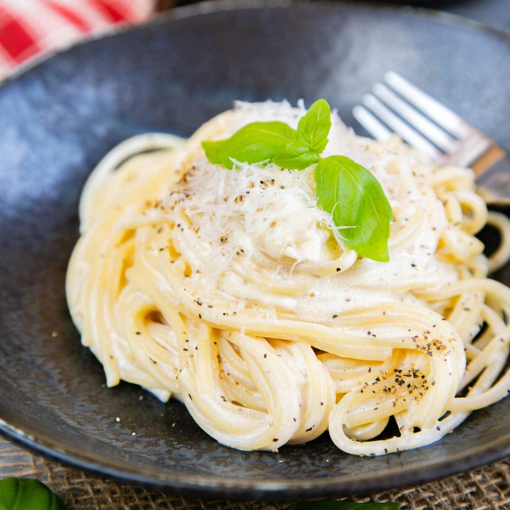

We are providing the most delicious Italian food items. This webpage features Italian main courses recipes.
Spaghetti |
Pasta |
|  | |
Ingredients |
Ingredients |
StepsSteps-1Steps-2Steps-3Steps-4 |
StepsSteps-1Steps-2Steps-3Steps-4 |
| Click here to go back |
Please leave your feedback and questions about recipes.